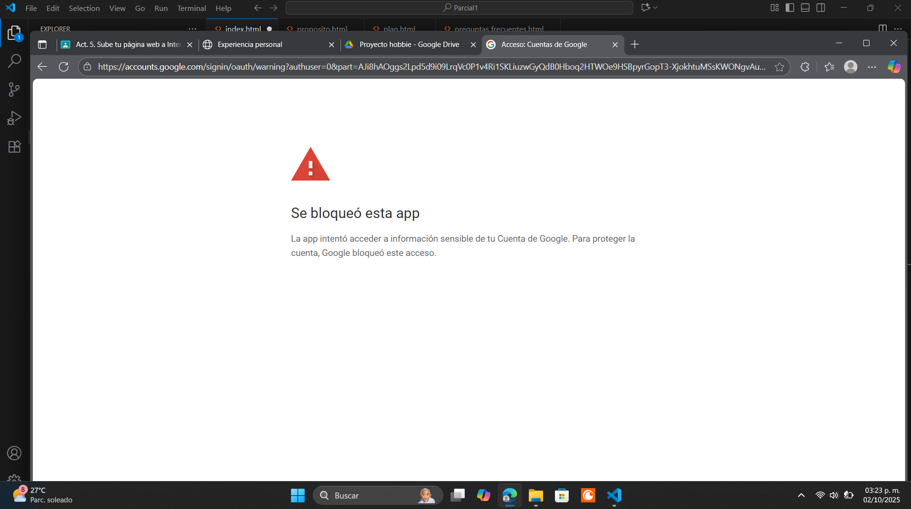

El voleibol es un deporte colectivo que nació en 1895 en Estados Unidos, creado por William G. Morgan como una actividad recreativa que combinaba dinamismo y trabajo en equipo. Desde entonces, este juego ha evolucionado hasta convertirse en una de las disciplinas más practicadas a nivel mundial, tanto en su versión de sala como en su modalidad de playa. Su carácter competitivo y recreativo lo ha posicionado como parte fundamental en programas escolares, clubes deportivos y competencias internacionales.
